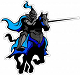

73
Ouf! Merci! Bon! Bon! Bon! Par où devrais-je commencer? Je suis présentement dans une petite clairière où il y a une rivière et un petit chemin. La rivière est très calme et peu profonde. Je pourrais sans doute la traverser facilement. Le chemin longe la rivière et si je me fie au soleil il semble se diriger vers le nord et vers le sud.
|